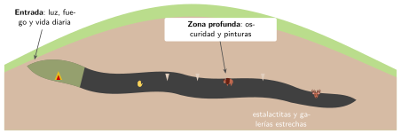
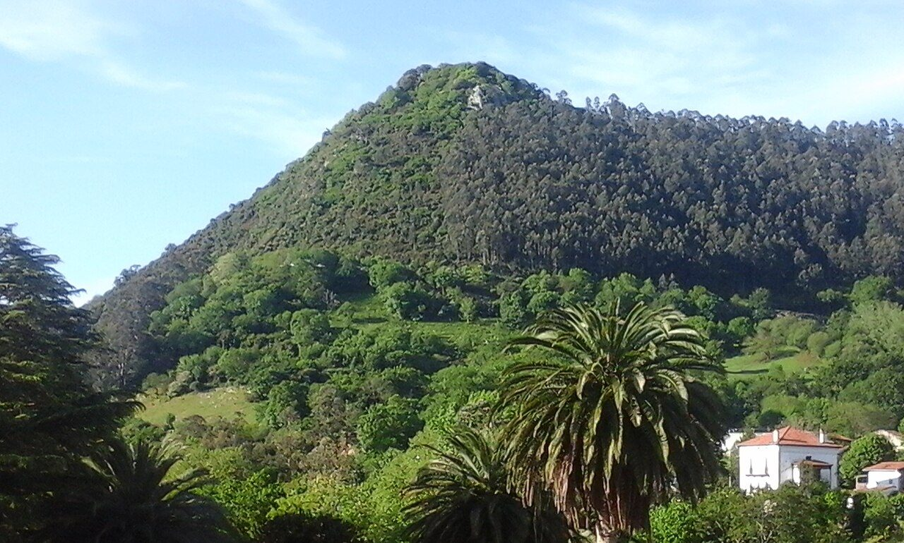

Las cuevas prehistóricas
Criterios: PC 5.1, PC 1.1
🤔 Pienso5 min
Qué hago aquí: Piensa un momento y contesta con lo que ya sabes. No pasa nada si no lo sabes: es para empezar.
En los dibujos animados, los «cavernícolas» viven dentro de las cuevas, en la oscuridad. ¿Te parece creíble? ¿Dónde vivirías tú si fueras cazador hace 20 000 años?
📖 Leo y aprendo15 min
Qué hago aquí: Lee despacio, mira los dibujos y los ejemplos, y quédate con la idea clave del final.
El Paleolítico es la etapa más larga de la Prehistoria. En Cantabria vivieron grupos humanos desde hace más de 100 000 años: primero los neandertales y, desde hace unos 40 000 años, nuestra especie, el Homo sapiens. Era la época de la última glaciación: hacía mucho más frío que hoy, y por Cantabria corrían bisontes, caballos, ciervos, renos e incluso mamuts.
Eran cazadores-recolectores nómadas: se movían por el territorio siguiendo a los animales y la maduración de los frutos. Cantabria era un lugar ideal: tenía mar (marisco y peces), ríos, valles con caza y miles de cuevas gracias a la roca caliza.

En el suelo de las entradas se acumulaban restos de su vida: huesos de animales, conchas, cenizas, herramientas de piedra y de hueso, adornos. Hoy los arqueólogos excavan esos yacimientos con mucho cuidado para reconstruir cómo vivían.

Foto: Demetrio E. Brisset · CC BY-SA 4.0 · Monte del Castillo, Puente Viesgo.jpg
✏️ Hago25 min
Qué hago aquí: Haz las actividades en orden. Empieza siempre por las básicas.
Explica por qué la idea del «cavernícola que vive en el fondo de la cueva» es falsa. Usa lo que has aprendido sobre la entrada y el fondo de las cuevas.
Explica tres razones por las que Cantabria era un buen lugar para vivir en el Paleolítico, relacionándolas con el relieve, la roca y el mar.
Explica qué significa ser nómada y cazador-recolector. ¿Por qué esa forma de vida obligaba a moverse según las estaciones?
En un yacimiento aparecen, de abajo arriba: una capa con herramientas de neandertal, una capa estéril (sin restos) y una capa con arpones de hueso de Homo sapiens. Ordénalas de más antigua a más reciente y explica qué principio usas.
Un arqueólogo encuentra en la entrada de una cueva muchas conchas de lapa, huesos de ciervo quemados y astillas de sílex. Escribe tres conclusiones sobre la vida de ese grupo y qué pruebas apoyan cada una.
Compara el clima y la fauna de Cantabria en la última glaciación con los de hoy. ¿Qué animales han desaparecido y cuáles siguen aquí?
Explica por qué un excavador furtivo que saca objetos de una cueva destruye información, aunque se quede con las piezas. Usa la palabra contexto.
🚀 Amplío (si quieres saber más)
Qué hago aquí: ¿Has terminado? Lee la curiosidad o elige el reto. Es voluntario.
Investiga la cueva de El Pendo (Camargo): qué capas tiene, qué especies humanas la ocuparon y qué objetos destacados se han encontrado. Dibuja un corte estratigráfico con al menos cuatro capas y explica qué cuenta cada una.
✅ Compruebo5 min
Qué hago aquí: Contesta sin mirar la ficha y marca cómo lo llevas.